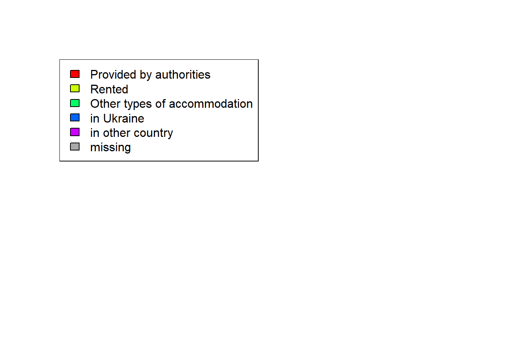
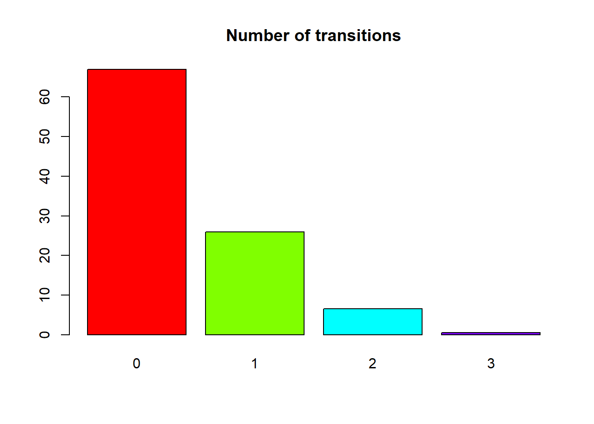

The data were prepared for analysis as follows: the longitudinal data format was converted into a wide format for two variables: country and accommodation for rounds 4, 10, 16, 21/22. The converted data are stored in the file “wide-accomm.rds” for further analysis of trajectories.
На першому кроці аналізу завантажуються потрібні пакети, які дозволяють заповнити пропущені значення і визначити послідовності станів для змінної accommodation.
library(TraMineR)
TraMineR stable version 2.2-9 (Built: 2024-04-27)
Website: http://traminer.unige.ch
Please type 'citation("TraMineR")' for citation information.
library(TraMineRextras)
TraMineRextras stable version 0.6.7 (Built: 2024-04-27)
Functions provided by this package are still in test
and subject to changes in future releases.
library(seqimpute)library(dplyr)
Attaching package: 'dplyr'
The following objects are masked from 'package:stats':
filter, lag
The following objects are masked from 'package:base':
intersect, setdiff, setequal, union
wide <-readRDS("wide-accomm.rds")
Fill only internal gaps in the data using Multiple Imputation.
sequence <-seqimpute( wide, var =6:9, m =1, timing =TRUE,npt =0, nfi =0)
iteration : 1 / 1
[1] "Imputation of the internal gaps..."
[1] "Step 1/2"
[1] "Step 2/2"
Define sequence object. Five states
sequence.alphabet <-c('authorities','rented','other','in Ukraine','in other country')sequence.scode <-c("AUTHOR","RENTED","OTHACC","IN.UKR","IN.OTH")sequence.lab <-c('Provided by authorities','Rented','Other types of accommodation','in Ukraine','in other country')sequence.seq <-seqdef(data = sequence$imp$imp1,var =1:4,alphabet = sequence.alphabet,states = sequence.scode,labels = sequence.lab,xtstep =1,cpal =rainbow(5),left =NA, right =NA)
[>] found missing values ('NA') in sequence data
[>] preparing 1193 sequences
[>] coding void elements with '%' and missing values with '*'
[>] state coding:
[alphabet] [label] [long label]
1 authorities AUTHOR Provided by authorities
2 rented RENTED Rented
3 other OTHACC Other types of accommodation
4 in Ukraine IN.UKR in Ukraine
5 in other country IN.OTH in other country
[>] 1193 sequences in the data set
[>] min/max sequence length: 4/4
4.1 Frequency tables
All existing sequences of accommodation trajectories, sorted from the most frequent to the least frequent.
The legend that will be used for the sequence charts that follow
seqlegend(sequence.seq)

Legend for charts
Frequency tables contain too much information. A graphical representation allows you to focus on the trajectories that occur most often. The following graph shows 20 sequences that represent 66.2% of all sequences in the data. The frequency of the particular sequence in the chart corresponds to the height of the row.
Sorting is possible by final state, which allows you to trace sequences that end in a specific way. Sorting is also possible by any other important feature that describes the household.
Even after reducing the number of sequence states, there are too many combinations due to various patterns of missing values to clearly identify the most important trends. To simplify the analysis, it makes sense to combine the sequences into groups (types). One approach proposed in the literature is to use cluster analysis. However, the hierarchical cluster analysis did not allow me to obtain logical clear groups, so I decided to go the other way: to classify the sequences based on the type of transitions from one state to another. To this end, the number of transitions in our data is first determined:
barplot( tb, col =rainbow(4),main ="Number of transitions")

As you can see, the bulk of the sequences are those without transitions, which can be called stable trajectories.
Now you can distinguish groups of sequences based on the number of transitions: no transitions, one transition, two transitions, more than one transition, and so on:
Now you can look at sequences with any number of transitions separately. For example, this table contains sequences with one or more state transitions:
The most informative way to represent such sequences is in the form of a table of transitions between individual states. Such tables can also be built for transitions between individual rounds: